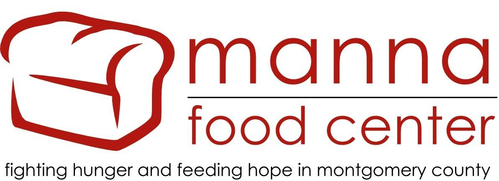

Hunger is one of the most important problems our society faces today. Together, we can help solve it.
A Few Stats
An estimated 12.3 percent of American households were food insecure at least some time during the year in 2016
The prevalence of very low food security also essentially unchanged, at 4.9 percent in 2016 and 5.0 percent in 2015
Children were food insecure at times during the year in 8.0 percent of U.S. households with children (3.1 million households)
About 59 percent of food-insecure households reported that they had participated in at least one of three nutrition assistance programs
How Can You Help?
Nearby Soup Kitchens and Food Centers include Nourish Now in Rockville, Lord’s Table in Gaithersburg, and Manna Food Center in Gaithersburg. They can always use more volunteers or more donated food! To learn more, contact your local soup kitchen to learn how you can help!
